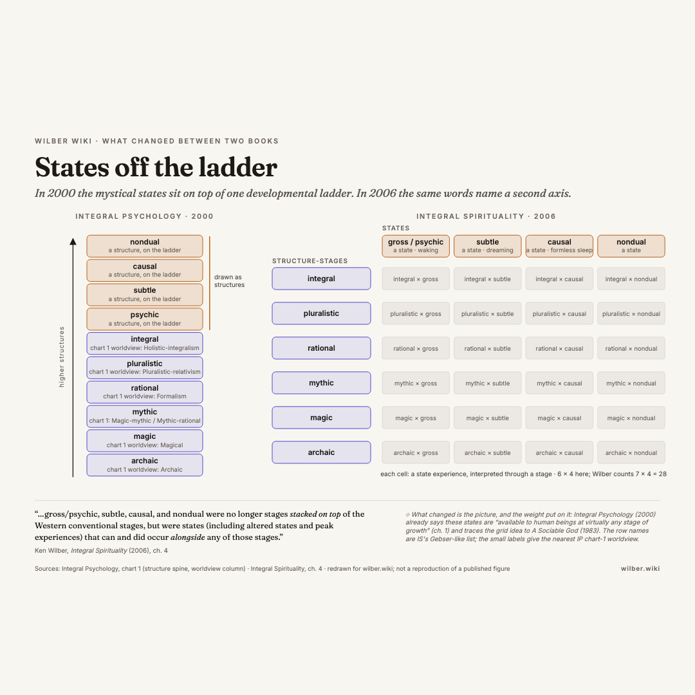

One language for drawing Wilber
A shared visual language for the series of Wilber visuals, shown on two real pieces rather than described. Serif is the book's voice, sans is the wiki's; four colour roles carry the meaning; every piece is one SVG source with a static image and an animation that settles on it. The written spec is README.md; the twelve directions it will apply to are in the options gallery.
Palette: four roles and a neutral
Colour carries meaning, not decoration. A hue appears in a figure only when the thing it marks is in the figure. Tokens follow the site's theme toggle (html[data-theme="dark"]) and fall back to the OS setting; this page is showing the current theme. Every text role passes 4.5:1 on paper and surface in both themes (contrast.py).
Decisions: the two fallacies in the pre/trans piece share one colour, because they are the same kind of thing; the first build coloured them differently and it read as a ranking. "State" shares the site's amber so the series feels native to wilber.wiki, so a figure never uses amber for both a state and a highlight. Rejected: Wilber's own altitude rainbow for levels (imports a late-Wilber convention into every figure, unreadable in dark mode) and monochrome (loses the state/structure distinction the states piece exists to make).
Type: the book's voice and the wiki's voice
Fraunces (serif) for titles, the names of Wilber's terms, and every verbatim quotation. Inter (sans) for labels, headers, locators, footers, controls and our notes. The reader learns without being told: serif is Wilber's words or his named things, sans is our apparatus.
Strokes and arrows
Four weights, three patterns, and a rule about arrows: a marker goes on a line only when the source gives the direction.
Label, verbatim quotation, marked interpretation
Three kinds of text, three looks, on the canvas and on the page. A quotation is always serif in curly quotes with a sans locator under it; the line number of the library/ text lives on the page, not the canvas. Anything that is our device or our judgement is sans italic muted with a ◇ in front, and the footer explains the mark once.
Motion: an animation always settles on the static frame
The source SVG is authored in its settled state; earlier steps only subtract. Four appearance verbs (wv-fade, wv-draw, wv-move, wv-ghost) on elements with data-at="k". Fade 420 ms, move 900 ms, draw 700 ms, ease cubic-bezier(.4,0,.2,1). With prefers-reduced-motion the steps become cuts and Play jumps to the end; without JS the markup is already the settled frame. Try it:
| token | value | used for |
|---|---|---|
--wv-t-fade | 420 ms | opacity |
--wv-t-move | 900 ms | transforms, ghost flights |
--wv-t-draw | 700 ms | stroke-dashoffset |
--wv-stagger | 90 ms | row-by-row delays (set inline) |
data-wv-dur | 1300–1700 ms | interval between steps on Play; a piece plays in under 8 s |
Share crops
The series canvas is 1200 × 800. The Open Graph crop is its top 1200 × 630 (title and figure, no passages); the square is the full canvas letterboxed. Both are viewBox crops declared on the SVG root and rendered by export.py, so they never drift from the source.



Piece: the pre/trans fallacy
Rebuilt in the language, now with an animation: the bands, then the untutored eye's two bins with the outer bands collapsing into one, then reductionism, then elevationism, then the passages. Left, the static export; right, the live page (open it, README).
Static · pre-trans-fallacy.png

Animated · the same source on its page
Piece: states off the ladder
Rebuilt as a before/after diptych that is also the settled frame of the animation: the 2000 ladder stays on the left while copies of its four top rungs fly off to become the state headers and its six lower rungs become the rows of the 2006 lattice. Left, the static export; right, the live page (open it, README).
Static · states-and-stages.png

Animated · the same source on its page
Embedding in Flowershow
- Copy
visuals.cssandwv-motion.jstoassets/visuals/and add them toconfig.jsonheadexactly as the roadmap stylesheet and the annotator script are loaded today. Everything is scoped under.wv-root; the script returns at once when no[data-wv-steps]is on the page. - In a markdown page, paste the piece's figure block as raw HTML (the
<div class="wv-root" data-wv-steps…>from itspage.html, withsource.svginside). Dark mode followshtml[data-theme="dark"]. - For a header image or a share card use the exported SVG or PNG with an
<img>; the standalone SVG carries its own tokens. - Edit
source.svgandpage.html, runpython3 design-language/export.py, never edit the outputs.
Open questions for Rufus
- Serif for Wilber's words, sans for ours: keep as a rule for the whole series?
- Both fallacies in one colour (madder) rather than the earlier amber/rose pair: more principled, but is it less readable?
- Light-only PNG exports, or also dark variants?
- The square is letterboxed rather than recomposed; a true square layout would mean a second arrangement per piece. Acceptable?
- The pre/trans canvas no longer carries the Engler line; it is on the page. Keep it off the image?
- Is the ladder → lattice animation an honest picture given that Integral Psychology already states the caveat? Both passages and the ◇ note are on the canvas; an alternative is a static diptych with no motion.